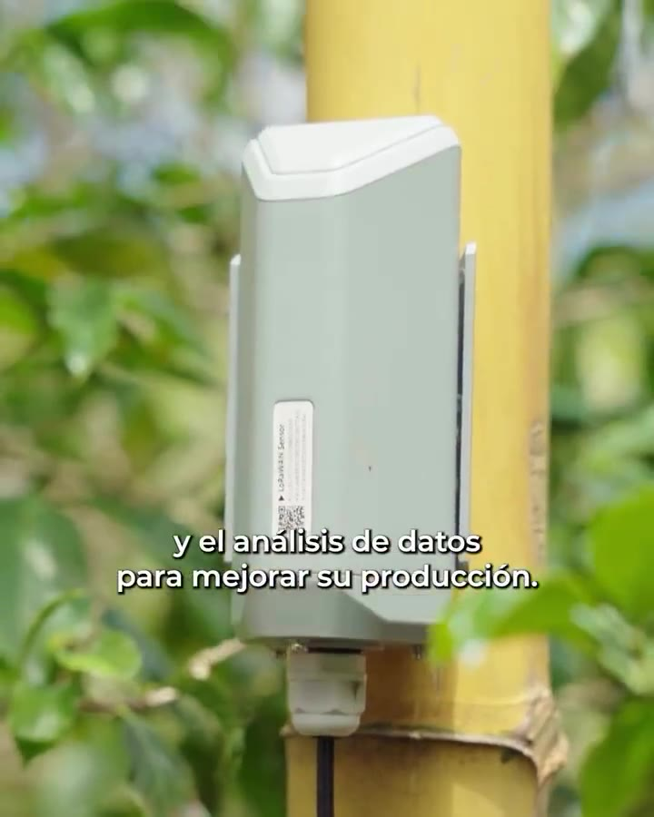

Sensores IoT que miden el suelo, el clima y el agua de su finca, conectados por redes de largo alcance y bajo consumo, con la información disponible en el celular del productor. Lo implementamos junto con Lain Holdings, empresa latinoamericana de soluciones IoT con presencia en Costa Rica, México, Chile, Perú, Panamá, Argentina y España.
Solicite una evaluación → Conozca AgroBoost 4.0Cada sensor envía sus datos en forma automática. Usted deja de depender de visitas y revisiones manuales para saber qué pasa en su cultivo.
La información que define el riego y la fertilización.
Estaciones meteorológicas en la propia finca.
Cada gota, medida y bien aprovechada.
Ambiente controlado y automatizado.
Monitoreo del hato y del peso de los animales.
Condiciones del agua bajo control en todo momento.
Una solución de extremo a extremo: sensores, red, plataforma y alertas.
Equipos de bajo consumo que funcionan con batería y transmiten sus lecturas en forma periódica.
Gateways de largo alcance y, donde no hay señal celular, conexión satelital a Internet.
Todas las fincas, sensores y estaciones en un solo tablero, con historial y mapas.
Avisos cuando algo se sale de lo normal y datos para decidir cuándo regar o fertilizar.
AgroBoost 4.0 nace como una iniciativa del MICITT para llevar la ciencia y la tecnología al campo. El programa instala sensores en las fincas y los conecta por una red inalámbrica de largo alcance. Así, los productores pueden usar el análisis de datos, y en adelante la inteligencia artificial, para conocer mejor sus cultivos y mejorar su producción.
Comenzó con caficultores de la zona de Dota y la meta es que más productores, en otras zonas del país, se beneficien, para mejorar los procesos productivos y la competitividad de Costa Rica.
Tech Advisors LA, junto con Lain Holdings, participa en el diagnóstico, la estabilización y el fortalecimiento de la red del proyecto.
Qué recibe el agricultor
Junto con Lain Holdings, diagnosticamos y estabilizamos la red de sensores de suelo, estaciones meteorológicas y gateways que da servicio a los caficultores del programa, en un valle de montaña donde el relieve es el mayor reto.
Visitamos las fincas, revisamos físicamente los sensores y gateways, y analizamos la telemetría de la plataforma de gestión para conocer el estado real de la red.
Hicimos una campaña de medición georreferenciada a pie y en vehículo, y simulamos la cobertura del valle con software de radioplanificación para ubicar los mejores puntos para los gateways.
La montaña bloqueaba la señal mucho más que la distancia. Además, los sensores traían una configuración de fábrica que transmitía en exceso y agotaba sus baterías antes de tiempo.
Instalamos un gateway en altura con enlace satelital, reconfiguramos los sensores para bajo consumo, cambiamos baterías, depuramos el inventario de equipos y dimos una charla a los agricultores.
Los sensores intervenidos volvieron a reportar temperatura, humedad, conductividad, pH y nutrientes del suelo. Con los nuevos emplazamientos en altura, el estudio proyecta casi duplicar la cobertura del valle habitado. Además, quedó un plan de fortalecimiento que incluye capacitar a personal local como primer nivel de soporte.
Conozca AgroBoost 4.0 en palabras del MICITT: sensores en las fincas, análisis de datos y acompañamiento a los caficultores para mejorar su producción.

Ver el video en Instagram →
Video publicado por el MICITT en @micittcr · Ver en Instagram →
Una red IoT agrícola no se resuelve solo con equipos: hay que diseñarla para el terreno, configurarla bien y acompañar a los productores.
Cuéntenos qué cultiva y qué necesita medir. Le proponemos una solución a la medida, sin compromiso.
Contáctenos →